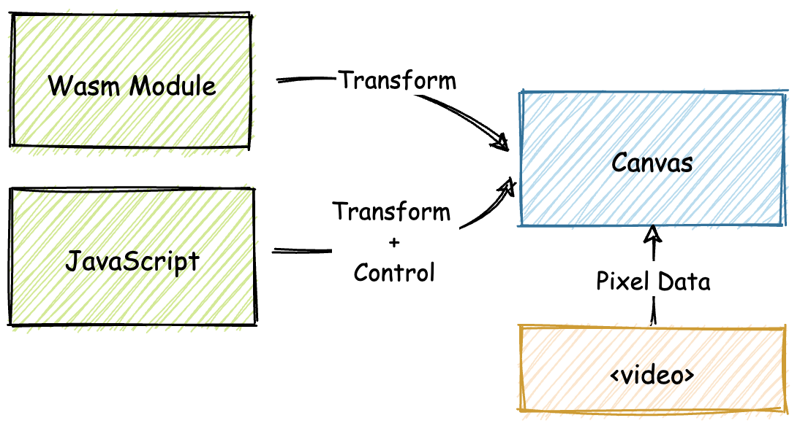
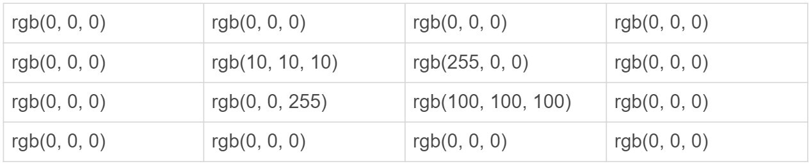
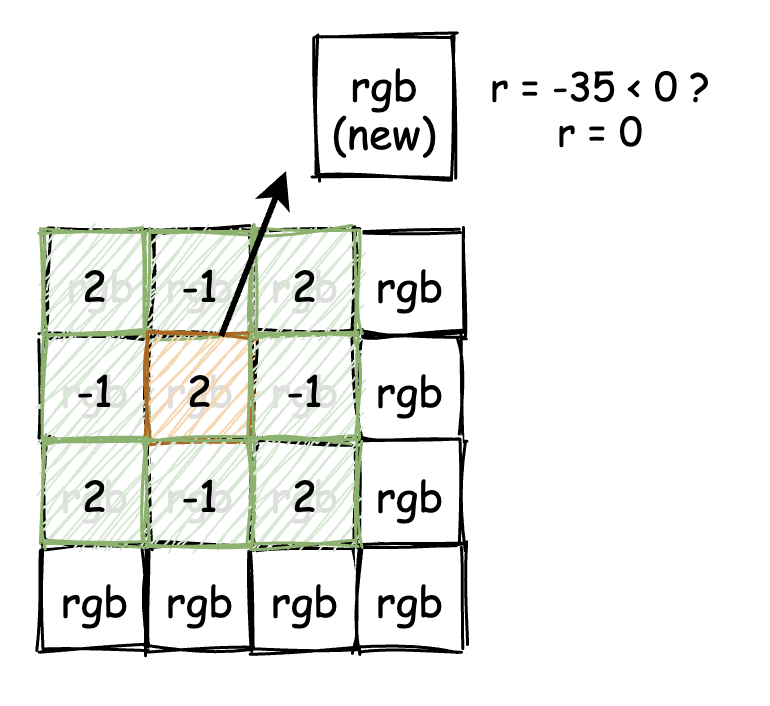
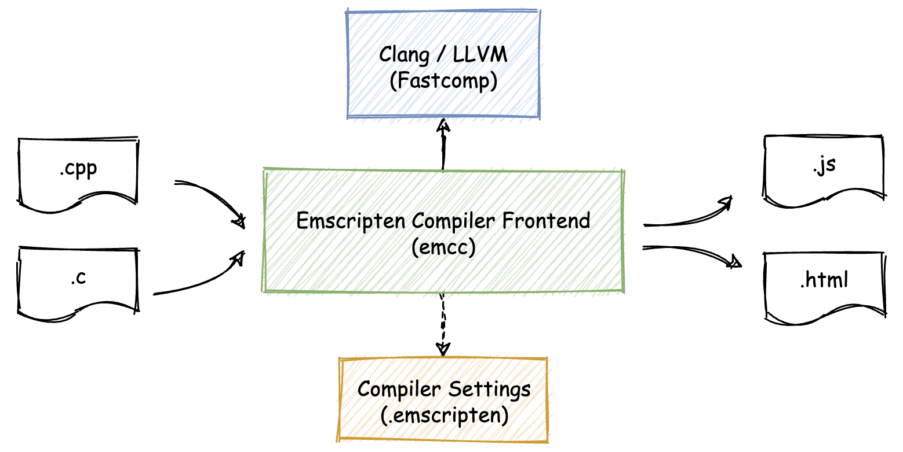
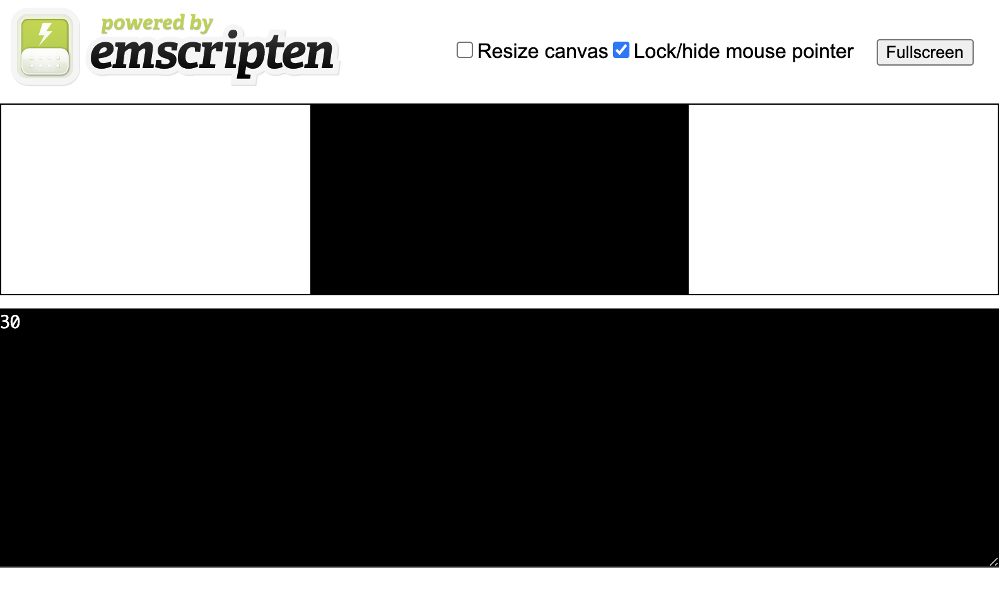
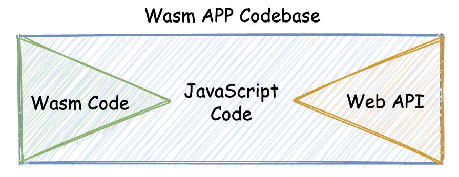

- 00 开篇词 我们为什么要了解 WebAssembly？.md.html
- 01 基础篇：学习此课程你需要了解哪些基础知识？.md.html
- 02 历史篇：为什么会有 WebAssembly 这样一门技术？.md.html
- 03 WebAssembly 是一门新的编程语言吗？.md.html
- 04 WebAssembly 模块的基本组成结构到底有多简单？.md.html
- 05 二进制编码：WebAssembly 微观世界的基本数据规则是什么？.md.html
- 06 WAT：如何让一个 WebAssembly 二进制模块的内容易于解读？.md.html
- 07 WASI：你听说过 WebAssembly 操作系统接口吗？.md.html
- 08 API：在 WebAssembly MVP 标准下你能做到哪些事？.md.html
- 09 WebAssembly 能够为 Web 前端框架赋能吗？.md.html
- 10 有哪些已经投入生产的 WebAssembly 真实案例？.md.html
- 11 WebAssembly 在物联网、多媒体与云技术方面有哪些创新实践？.md.html
- 12 有哪些优秀的 WebAssembly 编译器与运行时？.md.html
- 13 LLVM：如何将自定义的语言编译到 WebAssembly？.md.html
- 14 有哪些正在行进中的 WebAssembly Post-MVP 提案？.md.html
- 15 如何实现一个 WebAssembly 在线多媒体处理应用（一）？.md.html
- 16 如何实现一个 WebAssembly 在线多媒体处理应用（二）？.md.html
- 17 如何实现一个 WebAssembly 在线多媒体处理应用（三）？.md.html
- 18 如何进行 Wasm 应用的调试与分析？.md.html
- 19 如何应用 WASI 及其相关生态？.md.html
- 20 总结与答疑.md.html
- 结束语 WebAssembly，未来已来.md.html
- 捐赠
15 如何实现一个 WebAssembly 在线多媒体处理应用（一）？
你好，我是于航。
在之前两个章节的内容中，我们讲解了 Wasm 相关的核心原理，并介绍了 Wasm 在实际各个应用领域内的一些实践情况。从这一讲开始，我们将进入“实战篇”。作为第一个实战应用，我会手把手教你从零构建一个完整的 Wasm Web 应用。
具体是什么应用呢？你应该还记得，前面我们曾讲过一节课，题目是 “WebAssembly 在物联网、多媒体与云技术方面有哪些创新实践？” 。在那节课中，我们曾谈到过 Wasm 在 Web 多媒体资源处理领域所具有的极大优势。因此，接下来我们将一起尝试构建的应用，便是这样一个基于 Wasm 的在线 DIP 应用。
我把这个构建 Wasm Web 应用的完整过程，分成了上中下三讲。希望在你学完这三讲之后，能够游刃有余地了解一个 Wasm Web 应用从 0 到 1 的完整构建过程。我会在课程中尽量覆盖到足够多的实现细节，这样你可以通过细节去结合各方面的知识，不会在学习的过程中出现“断层”。
那接下来我们就直接进入主题，先来了解下这个 DIP 应用的概况。
DIP 应用概览
DIP 的全称为 “Digital Image Processing”，即“数字图像处理”。在我们将要构建的这个 Web 应用中，我们将会为在线播放的流媒体资源，去添加一个特定的实时“图像处理滤镜”，以改变视频本身的播放显示效果。
由于添加实时滤镜需要在视频播放时，同步地对当前某一帧画面上的所有像素点，进行一定的像素值的数学处理变换，因此整个应用从某个角度来说，是一个“计算密集型”应用。
首先，我们来看下这个应用在实际运行时的样子，你可以先看看下面给出的这张图。

根据这张图，我们可以将整个应用的运行界面划分为三个部分。其中最为明显就是上方的视频显示区域。在这个矩形的区域中，我们将循环播放一段视频，并根据用户是否选择添加滤镜，来实时动态地改变这里的视频显示效果。
紧接着视频下方的区域用来显示当前视频的实时播放帧率。通过显示播放帧率，我们将能够在应用运行时明显地看出，当在分别采用 JavaScript 以及 Wasm 为视频资源“添加”滤镜时，两者在计算性能上的差异。
再往下的一部分，便是整个应用的控制区域。在这个区域中，我们可以控制是否选择为视频添加滤镜效果。以及是使用 JavaScript 还是 Wasm 来处理滤镜的添加过程。当我们选择好某一项设置后，可以直接点击下方的“确定”按钮，使当前设置立即生效。
介绍完这个应用的 UI 布局之后，我们来总体看一看整个应用的结构图，如下所示。在后面的内容中，我们将会根据这个结构图，一步一步地来构建这个 Web 应用。

应用被划分为几个部分。首先，为了能够实时地处理视频数据，我们需要将 HTML <video>标签所承载视频的每一帧，都绘制在一个 Canvas 对象上，并通过 Web API — “requestAnimationFrame” 来让这些帧“动起来”。
然后这些数据将会根据用户所选择的设置，分别传递给 Wasm 模块或 JavaScript 进行相应的滤镜处理。这里 JavaScript 还同时兼具控制整个应用 UI 交互的作用，比如处理“点击事件”，处理用户所选择的设置等等。
滤镜的基本原理
在正式开始编写应用之前，我们还需要介绍几个在应用开发过程中会涉及到的概念和工具。首先，当我们说到“为视频添加滤镜”时，这一操作里的“滤镜”，主要是指什么？只有当你真正了解这个概念之后，你才能够知道相应的 JavaScript 代码，或者是 Wasm 代码需要做些什么。
为了了解什么是滤镜，我们需要先学习 DIP 领域中的一个基本概念 —— “卷积”。从一个直观的角度来看，对图像进行卷积的过程，其实就是通过一个具有固定尺寸的矩阵（也可以理解为二维数组），来对该图像中的每一个像素点的值进行重新计算的过程。
这个过程通常也被称为“滤波”。而我们上面介绍的固定尺寸的矩阵，一般被称为“卷积核”。每一种类型的卷积核都会对图像产生不同的滤镜效果。卷积的计算过程也十分简单，主要分为以下几个步骤。
- 首先将卷积核矩阵翻转 180 度。
- 然后将图像上除最外一圈（考虑到“边缘效应”，我们选择直接忽略边缘像素）的其他各像素点的灰度值，与对应的卷积核矩阵上的数值相乘，然后对所有相乘后得到的值求和，并将结果作为卷积核中间像素点对应图像上像素的灰度值。（这里提到的“灰度值”也可以由每个像素点的各 RGB 分量值来进行代替）。
- 重复上述步骤，直至图像中所有其他像素点均完成此计算过程。
为了加深你对上面计算过程的理解，这里我们来举个例子。首先，我们给出一个 3 x 3 大小的卷积核矩阵：
按照步骤，第一步我们需要对该矩阵进行 180 度的旋转，但由于该矩阵是中心对称的，因此经过旋转后的矩阵与原矩阵相比，没有任何变化。接下来，我们给出如下一个 4 x 4 像素大小的图像，并使用上述卷积核来对此图像进行滤波操作。该图像中各像素点的 RGB 分量值如下所示：

按照规则，对于 3 x 3 大小的卷积核矩阵，我们可以直接忽略图像最外层像素的卷积处理。相应地，我们需要从第二行第二列的像素点开始进行卷积计算。
首先，将之前翻转后的卷积核矩阵中心，与第二行第二列位置的这个像素点对齐，然后你会发现，卷积核矩阵中的各个单元，正好与图像左上角 3 x 3 范围内的像素一一对应。这就是我们可以忽略对图像最外一层像素进行卷积处理的原因。
因为在对这些像素点进行卷积计算时，卷积核矩阵覆盖的像素范围会超过图像的边界。你可以参考文中下面这张图来帮助理解我们现在所进行的步骤。

接着，我们开始计算。计算过程很简单。首先，我们把卷积核矩阵对应的 9 个单元格内，各像素点的 RGB 分量值与对应单元内的数值相乘，然后将这九个值进行求和。得到的结果值就是在卷积核矩阵中心单元格内，所对应像素的 RGB 分量值的卷积结果值。对于其他分量的卷积计算过程可以以此类推。
可能这么说，你还是有些不好理解。我以图像中第二行第二列的像素点为例，给你计算一下这个像素点 R 分量的卷积结果 R(c) ：
R(c) = 2 x 0 + -1 x 0 + 2 x 0 + -1 x 0 + 2 x 10 + -1 x 255 + 2 x 0 + -1 x 0 + 2 x 100 = -35
可以看到，这个分量值在经过卷积计算后的结果值为 -35。但别急，相信你已经发现了不对的地方。一个 RGB 分量的有效取值范围为 [0, 255]，而负数则明显是不正确的。
因此，在实际的卷积计算过程中，我们还需增加另外一个规则，也就是：对于小于 0 的计算结果，用 0 代替，大于 255 的计算结果，则用 255 进行代替。按照这个规则，该像素值经过卷积计算后的实际结果值应该为 0。
而在本次实践中，我们将会使用下面这个同样 3 x 3 大小的卷积核：
Emscripten 的基本用法
接下来，我们将讲解一下，本次实践所需要使用到的编译工具 — Emscripten（版本 1.39.19）。简单来说，Emscripten 是一个“源到源”语言编译器工具集，这个工具集可以将 C/C++ 代码编译成对应 JavaScript 代码。
既然是工具集，它便不是由单一的二进制可执行文件组成的，除了最为重要的编译器组件 emcc 以外，Emscripten 还同时为我们提供了包含有特定功能宏定义的 C/C++ 头文件、一些 Python 脚本以及其他的附属命令行工具等。其中，emcc 的基本组成结构如下图所示：

可以看到，emcc 能够将输入的 C/C++ 代码，编译成对应的 JavaScript 代码以及用于组成 Web 应用的 HTML 文件。
起初，Emscripten 主要用于将 C/C++ 代码编译成对应的 ASM.js 代码，而随着后来 Wasm 的逐渐发展和流行，Emscripten 也开始支持将这些输入代码编译成 Wasm 二进制代码。这部分代码的转换功能，主要依赖于 LLVM 为支持 Wasm 而特意添加的编译器后端。
因此，整个转换的大致流程可以简单归结为：C/C++ 源代码 -> LLVM IR -> Wasm。
emcc 直接使用了 Clang 编译器的前端，把编译输入的 C/C++ 源代码转换到 LLVM-IR 中间代码。这些中间形式的代码有利于编译器进行特殊的优化，以便生成更加优质的目标代码。
需要注意的一点是，在上图中你可以看到一个名为 “Fastcomp” 的组件，这个组件是 Emscripten 在旧版本中用于生成 ASM.js 代码的编译器后端，当然它也兼有生成 Wasm 代码的功能。
但是在最近的版本中，Emscripten 已经完全使用 LLVM 的后端，来代替 Fastcomp 生成 Wasm 二进制代码。从某种程度上来看，使用 LLVM 的 Wasm 编译器后端，将逐渐成为在主流静态编译器中，将 Wasm 作为编译目标的首选实现方式。
关于 Emscripten 的具体安装过程你可以参考官方文档。安装完成后，我们便可以来小试身手。接下来，我们将尝试使用 Emscripten 编译如下这段 C/C++ 代码（文件名为 main.cc）：
#include <iostream>
#include <emscripten.h>
extern "C" {
EMSCRIPTEN_KEEPALIVE
int add(int x, int y) {
return x + y;
}
}
int main(int argc, char **argv) {
std::cout << add(10, 20) << std::endl;
return 0;
}
在这段代码中，我们声明了一个函数 “add”，该函数接收两个整型参数，并返回这两个参数的算数和。整个函数的定义被放置在 extern “C” {} 结构中，以防止函数名被 C++ Name Mangling 改变。这样做的目的主要在于，我们可以确保当在宿主环境（比如浏览器）中调用该函数时，可以用基本与 C/C++ 源代码中保持一致的函数名，来直接调用这个函数。
这里需要注意的一个点是，我们使用了名为 “EMSCRIPTEN_KEEPALIVE” 的宏标记了该函数。这个宏定义在头文件 “emscripten.h” 中，通过使用它，我们能够确保被“标记”的函数不会在编译器的编译过程中，被 DCE（Dead Code Elimination）过程处理掉。紧接着，我们定义了主函数 main，并在其中调用了该函数。最后通过 std::cout 将该函数的调用结果输出到 stdout。
在代码编写完成后，我们可以使用下面的命令行来编译这段代码：
emcc main.cc -s WASM=1 -O3 -o main.html
这里我们通过 “-s” 参数，为 emcc 指定了编译时选项 “WASM=1”。该选项可以让 emcc 将输入的 C/C++ 源码编译为对应的 Wasm 格式目标代码。同时，我们还指定了产出文件的格式为 “.html”，这样 Emscripten 便会为我们生成一个可以直接在浏览中使用的 Web 应用。
在这个应用中，包含了所有我们需要使用到的 Wasm 模块文件、JavaScript 代码以及 HTML 代码。为了能够在本地运行这个简单的 Web 应用，我们还需要准备一个简单的 Web 服务器，这里我们直接使用 Node.js 创建了一个简易的版本。代码如下所示：
const http = require('http');
const url = require('url');
const fs = require('fs');
const path =require('path');
const PORT = 8888; // 服务器监听的端口号；
const mime = {
"html": "text/html;charset=UTF-8",
"wasm": "application/wasm" // 当遇到对 ".wasm" 格式文件的请求时，返回特定的 MIME 头；
};
http.createServer((req, res) => {
let realPath = path.join(__dirname, `.${url.parse(req.url).pathname}`);
// 检查所访问文件是否存在，且是否可读；
fs.access(realPath, fs.constants.R_OK, err => {
if (err) {
res.writeHead(404, { 'Content-Type': 'text/plain' });
res.end();
} else {
fs.readFile(realPath, "binary", (err, file) => {
if (err) {
// 文件读取失败时返回 500；
res.writeHead(500, { 'Content-Type': 'text/plain' });
res.end();
} else {
// 根据请求的文件返回相应的文件内容；
let ext = path.extname(realPath);
ext = ext ? ext.slice(1) : 'unknown';
let contentType = mime[ext] || "text/plain";
res.writeHead(200, { 'Content-Type': contentType });
res.write(file, "binary");
res.end();
}
});
}
});
}).listen(PORT);
console.log("Server is runing at port: " + PORT + ".");
关于代码的实现细节，主要部分我都以注释的形式进行了标注。其中最为重要的一个地方就是对 “.wasm” 格式文件请求的处理。可以看到，这里当服务器收到一个对 “.wasm” 格式文件的 HTTP 请求时，会返回特殊的 MIME 类型 “application/wasm”。
通过这种方式，我们可以明确告诉浏览器，这个文件是一个 Wasm 格式的文件，进而浏览器便可以允许应用使用针对 Wasm 文件的“流式编译”方式（也就是我们在之前文章中介绍的 WebAssembly.instantiateStreaming 这个 Web API），来加载和解析该文件，这种方式在加载的处理大体积 Wasm 文件时会有着非常明显的效率优势。
接着，启动这个本地服务器后，我们便可以在浏览器中通过 8888 端口来访问刚刚由 Emscripten 编译生成的 main.html 文件。如果你顺利地到达了这里，那么恭喜，你将可以看到如下界面：

仔细观察，你会发现我们之前在 C/C++ 代码的 main 函数中，通过 std::cout 打印的，函数 add 的调用结果被显示在了下方的黑色区域中。
我们都知道，在 C/C++ 代码中，可以通过标准库提供的一系列 API 来直接访问主机上的文件，甚至也可以通过调用本地主机的系统调用来使用多线程等功能。那么，这部分代码是如何被编译到 Wasm 里，并允许在 Web 浏览器中使用的呢？这一切，都要归功于 Emscripten 为我们提供的一个虚拟主机运行时环境。
如下面这张图所示，通常一个完整的 Wasm Web 应用，都会由三部分组成，即：Wasm 模块代码、JavaScript 胶水代码以及一些对 Web API 的调用。

为了能够支持在 Web 浏览器中“使用”诸如 std::fopen 等 C/C++ 语言中，用于访问本机文件资源的标准库函数，Emscripten 会使用诸如 LocalStorage 之类的浏览器特性，来模拟完整的 POSIX 文件操作和相关的数据结构。当然，只不过这一切都是使用 JavaScript 来模拟实现的。
同样，在我们这个例子中，对于发送到 stdout 的数据，Emscripten 会通过 JavaScript 直接映射并输出到页面上的指定的 textarea 区域中。类似的，对于多线程甚至 TCP 网络访问（POSIX Socket），Emscripten 也会相应地通过浏览器上的 Web Worker 以及 Web Socket 等方式来进行模拟。
在上面的例子中，我们尝试了 Emscripten 最基本、最简单的，用于构建 Wasm Web 应用的一种方式。但该方法的弊端在于由 Emscripten 自动生成的“胶水代码”中，包含有通过 JavaScript 模拟出的 POSIX 运行时环境的完整代码，因此在某些情况下，应用整体的体积可能还是稍显过大。在极端网络环境的情况下，Web 应用可能会显得力不从心。
是否有方法可以让 Emscripten 仅生成 C/C++ 代码对应的 Wasm 模块，而对于 JS Glue 和 Web API 这两部分的代码则由我们自行编写呢？在接下来的两节课里，我将为你解答这个疑问。
总结
好了，讲到这，今天的内容也就基本结束了。最后我来给你总结一下。
今天我们主要讲解了与实战项目有关的一些概念，比如“什么是滤镜？”，“为图片添加滤镜的具体步骤？”，以及 “什么是 Emscripten？”，“Emscripten 的基础用法？”等等。提前对这些概念有所了解可以加深我们对整个实战项目的组成结构与实现细节的把握。
其中，我希望你能够明确了解 Emscripten 在构建 Wasm Web 应用时，其所充当的一个编译器的角色，它可以将源 C/C++ 代码编译到 JavaScript 代码（甚至包括相应的 HTML 文件）。
另外，你需要重点了解的是，当 Emscripten 作为工具链使用时，它“以 emcc 、多种具有特定功能宏定义的 C/C++ 头文件为主，其他脚本和命令行工具为辅”的整体组成结构。
作为首个成功帮助 Wasm 在 Web 浏览器中进行生产实践的工具链，Emscripten 还有着众多的特性和功能等待着你去探索。
课后练习
最后，我们来做一个小练习吧。
还记得在今天的 Emscripten 实例中，我们使用到了名为 “EMSCRIPTEN_KEEPALIVE” 的宏，来确保被标记的函数不会被编译器优化掉。那么，你知道它具体是怎样实现的吗？
今天的课程就结束了，希望可以帮助到你，也希望你在下方的留言区和我参与讨论，同时欢迎你把这节课分享给你的朋友或者同事，一起交流一下。
© 2019 - 2023 Liangliang Lee. Powered by gin and hexo-theme-book.